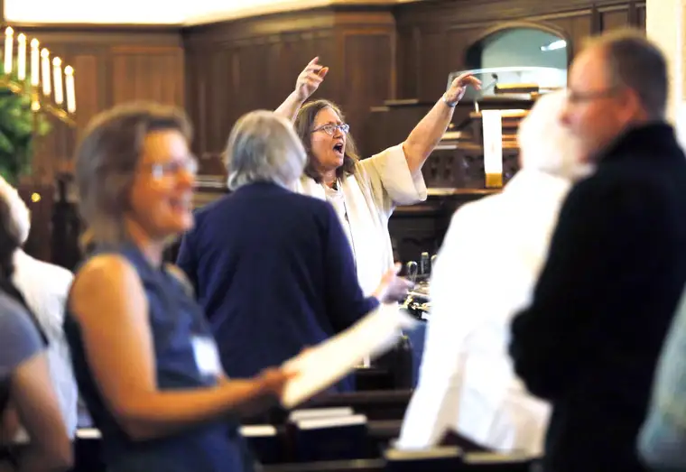

[For the sake of having a repository for my newspaper columns and articles, I reprint them here with permission a week after their run date. The following ran in The Forum newspaper on May 9, 2015.]
By Roxane B. Salonen
FARGO — Calisthenics in the middle of a church service? Why not, says the Rev. Grace Murray of Plymouth Congregational United Church of Christ.
{kind=link}

“I don’t do it every Sunday, but when I have a song that will work, when I have a more upbeat hymn, I will try to get (my congregants) to do some movement.”
Recently, while preparing for her service, she landed on “Trees of the Field,” the song of benediction, and knew it would be perfect for the cause.
“It has that sort of Jewish dance tune, so I encourage them to move,” says Murray, who has bought whole hog—or maybe half hog, considering portion size—a program called Faith Communities Alive to encourage more fit congregations.
“It’s not a lot of activity, but we consider it baby steps toward helping people to move more, and having it as part of worship,” Murray says.
She seems a fitting leader to help pilot the Faith Communities Alive program, a partnership between North Dakota State University Extension, Cass County Extension Service and community partners, with funding from the Dakota Medical Foundation.
Since last August, Murray has lost 55 pounds, an endeavor she took up separately from Faith Communities Alive, but that melds with it nicely.
“I turned 60 in January, and I have to admit I feel much better at 60 than I did at 59,” says Murray, who recently had to have her alb — a pastoral garment — altered to fit her new body. “I hope it is inspiring for people. They seem to celebrate what I’m doing.”
As a pastor, she also understands how the physical and spiritual are connected.
“We are the stewards of creation, which means we are stewards of our health,” she says. “I think that keeps us in a place where, when our bodies are healthier, we can be more in tune with the spirit. When we’re not struggling physically, I think we’re more open to God’s movement within us.”
Fresh fruit over doughnuts
Katie Gross, outgoing parish nurse at First Lutheran Church, has watched Faith Communities Alive in action through several ways, but one of the most notable has been the decision to, whenever possible, offer fresh fruit along with the cookies or doughnuts during after-service coffee or “fellowship” hour.
“What’s great is the kids love it, and they are usually running up there for more,” she says.
The parish also has a team of 80 runners signed up together to run in today’s Scheels Fargo Marathon. “We’ve got everyone from people who have never run a race to those running the full marathon. We’re just encouraging our members to get fit,” Gross says.
Back at Plymouth Congregational, Judy Maxson, who assists Murray in her mission, says they’ve had some Sundays where unusual fruits have been offered, such as gooseberries, blood oranges and an assortment of pears.
Laurie Brakke, shelter nurse at the YWCA, says although they are not a church setting, “we’re glad to be on board.”
A huge boost to the program came with a “breakthrough idea” grant through the DMF offering seed money for the focus groups taking part—$500 to be used to purchase food or other tools or equipment to inspire healthier living.
After joining the initiative, Brakke says, her staff filled out a wish list and through that obtained exercise videos and balls, playground equipment for the on-site day care, and most recently a blender to add fruit smoothies to their snack choices.
“We’ve also been sharing healthy recipes. Recently we made a healthy granola, for example,” she says. “And we’ve been using the exercise balls at the work-station sites. Right now, we have a resident with back problems using that to strengthen those muscles.”
The program’s seeds
At its root, Faith Communities Alive—a takeoff of the other local “Alive” programs, such as StreetsAlive!—is scriptural. In 1 Corinthians 6:19, we read, “Do you not know that your bodies are temples of the Holy Spirit, who is in you, whom you have received from God? You are not your own.”
Verses like these are peppered within Faith Communities Alive literature, which congregations that take part can use as an encouragement and reminder of how to live healthier, and why it’s important.
Rita Ussatis, an Extension agent for Cass County, has been working with the project since 2008, when it was still in the idea phase. Initially, only two local congregations joined. Currently, 24 have hopped aboard.
“We have a large population in North Dakota that regularly attends faith communities,” Ussatis says, offering why these groups have been a focus. “Through this, we can address the whole family, from birth to death, as a unit—whatever the definition of the family may be.”
Bev Gravdahl, a faith communities nurse for Sanford who also works part time for DMF and NDSU Extension, says physical health is just one part of our overall health, but it matters, and even making small changes “like cutting the doughnuts in half” can make a big difference.
Sustainability is also important, she says. “We want this to be something generations down the road can continue.”
Julie Garden-Robinson, a food and nutrition specialist and NDSU professor who also has helped develop the program, and is helping develop literature to expand it beyond our area, says historically, most of the faith-community-based nutrition interventions have been in Southern states with African-American congregations.
Though most current participants here are Lutheran, she adds, the program welcomes communities of all faiths.
And for the reluctant Scandinavians who may not want to give up their traditions altogether, she offers, “We’re not going to take away your hotdish, but we might help make it healthier.”